Skill: Visualization with ggplot in R
Visualization is a key part of statistical analyses, especially in systems engineering! Visuals themselves are often the analysis themselves! In this tutorial, we’re going to learn how to visualize data in the ggplot2 package.
Please follow along using the code below!
Gapminder data
Economist Hans Rosling made a dataset that examines change in life expectancy over time for most countries in the world. It is contained in the gapminder package!
# Let's view it. (see console below)
gapminder## # A tibble: 1,704 × 6
## country continent year lifeExp pop gdpPercap
## <fct> <fct> <int> <dbl> <int> <dbl>
## 1 Afghanistan Asia 1952 28.8 8425333 779.
## 2 Afghanistan Asia 1957 30.3 9240934 821.
## 3 Afghanistan Asia 1962 32.0 10267083 853.
## 4 Afghanistan Asia 1967 34.0 11537966 836.
## 5 Afghanistan Asia 1972 36.1 13079460 740.
## 6 Afghanistan Asia 1977 38.4 14880372 786.
## 7 Afghanistan Asia 1982 39.9 12881816 978.
## 8 Afghanistan Asia 1987 40.8 13867957 852.
## 9 Afghanistan Asia 1992 41.7 16317921 649.
## 10 Afghanistan Asia 1997 41.8 22227415 635.
## # ℹ 1,694 more rowsEach row is a country-year, marking the life expectancy, population, and gross domestic product (GDP) per capita. On your end, you can only can see some of it, right?
Let’s check out what vectors are in this dataframe, using the glimpse function from the dplyr package.
# (Remember, a vector is a column in a spreadsheet;
# a data.frame is a spreadsheet.)
glimpse(gapminder)## Rows: 1,704
## Columns: 6
## $ country <fct> "Afghanistan", "Afghanistan", "Afghanistan", "Af…
## $ continent <fct> Asia, Asia, Asia, Asia, Asia, Asia, Asia, Asia, …
## $ year <int> 1952, 1957, 1962, 1967, 1972, 1977, 1982, 1987, …
## $ lifeExp <dbl> 28.801, 30.332, 31.997, 34.020, 36.088, 38.438, …
## $ pop <int> 8425333, 9240934, 10267083, 11537966, 13079460, …
## $ gdpPercap <dbl> 779.4453, 820.8530, 853.1007, 836.1971, 739.9811…# Nice, we can see things more concisely.Our data has six variables. Great!
Your first scatterplot
Using the gapminder data, let’s map a series of vectors to become aesthetic features in the visualization (point, colors, fills, etc.).
ggplot(data = gapminder, mapping = aes(
# Let's make the x-axis gross-domestic product per capita (wealth per person)
x = year,
# Let's make the y-axis country life expectancy
y = lifeExp))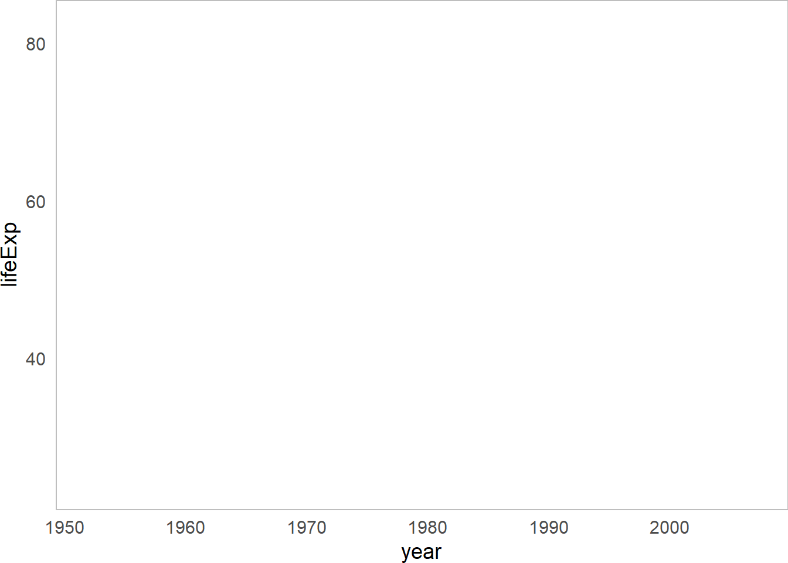
Huh! We made an empty graph. Cool.
That’s because ggplot needs helper functions to add aesthetic features to the graph.
For example, adding + geom_point() will overlay a scatterplot.
# Make a scatterplot
ggplot(data = gapminder, mapping = aes(x = gdpPercap, y = lifeExp)) + # same as above, except "+"
geom_point()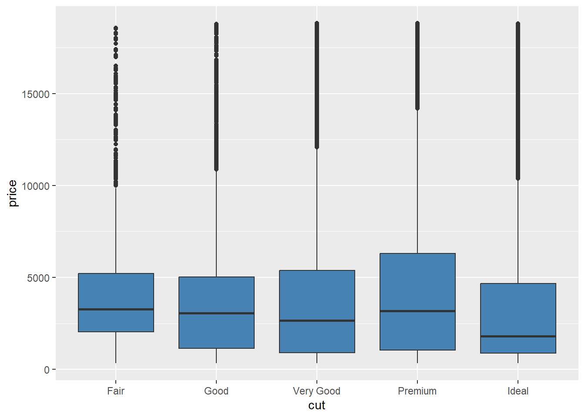
LC 2
Question
What happens when you add the alpha, changing its values in the 3 visuals below?
# Run the following code:
ggplot(data = gapminder, mapping = aes(x = gdpPercap, y = lifeExp)) +
geom_point(alpha = 0.2)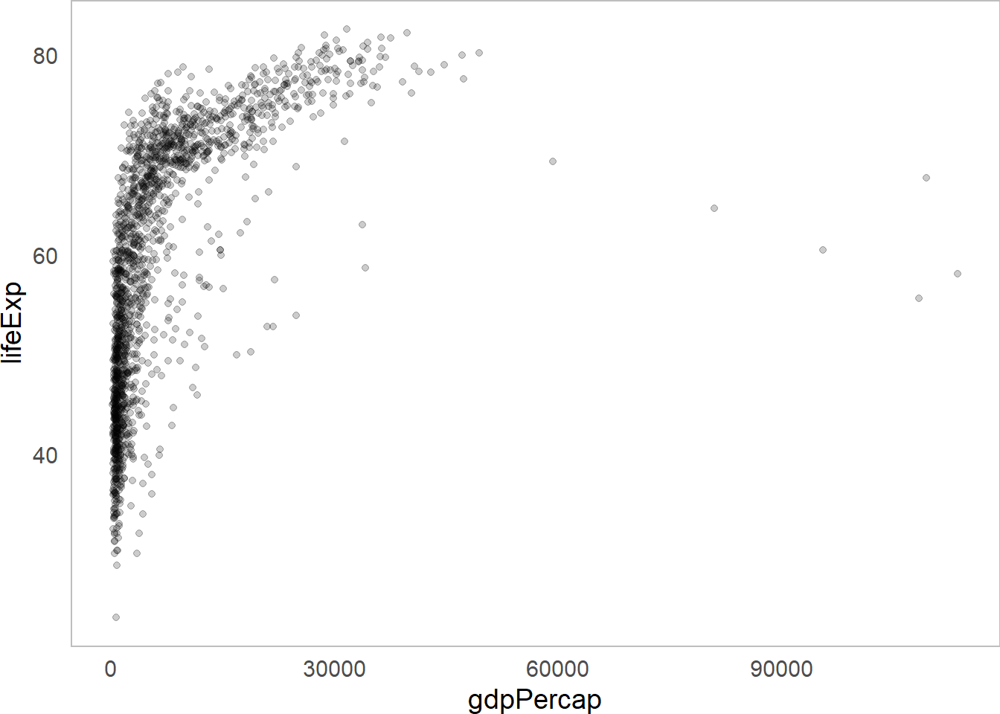
ggplot(data = gapminder, mapping = aes(x = gdpPercap, y = lifeExp)) +
geom_point(alpha = 0.5)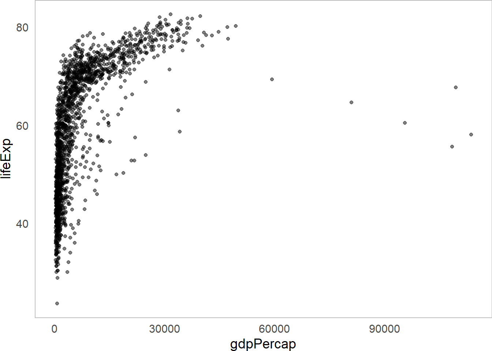
ggplot(data = gapminder, mapping = aes(x = gdpPercap, y = lifeExp)) +
geom_point(alpha = 1)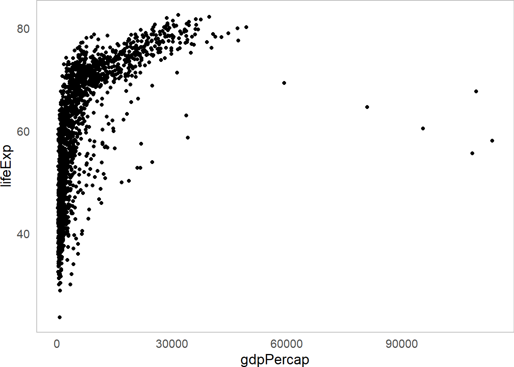
LC 3
Question
We can make it more visually appealing. What happens when we do each of the following?
If you want to make it a single color, where do you need to write
color = ...?If you want to make it multiple colors according to a vector, where do you need to write
color =?
# Run the following code:
# Version 1
ggplot(data = gapminder, mapping = aes(x = gdpPercap, y = lifeExp)) +
geom_point(alpha = 0.5, color = "steelblue")
# Version 2
ggplot(data = gapminder, mapping = aes(x = gdpPercap, y = lifeExp, color = continent)) +
geom_point(alpha = 0.5)Improving our Visualizations
We can (and should!) make our visualizations much more readable by adding appropriate labels.
ggplot(data = gapminder, mapping = aes(x = gdpPercap, y = lifeExp,
color = continent)) +
geom_point(alpha = 0.5) +
# Add labels!
labs(x = "GDP per capita (USD)", # label for x-values
y = "Life Expectancy (years)", # label for y-values
color = "Continent", # label for colors
title = "Does Wealth affect Health?", # overall title
subtitle = "Global Health Trends by Continent", # subtitle!
caption = "Points display individual country-year observations.") # caption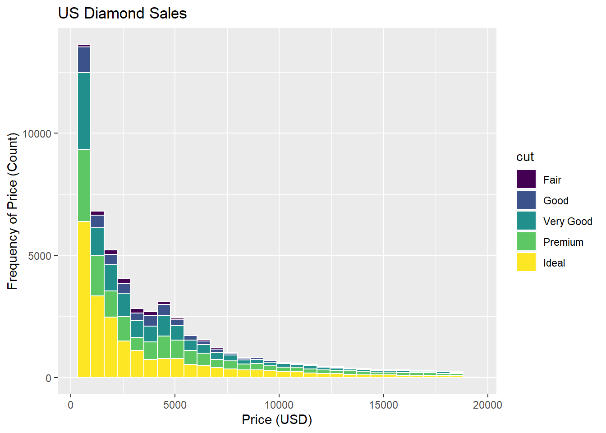
We can actually save visualizations as objects too, which can make things faster.
Let’s save our visual as myviz
myviz <- ggplot(data = gapminder, mapping = aes(x = gdpPercap, y = lifeExp,
color = continent)) +
geom_point(alpha = 0.5) +
labs(x = "GDP per capita (USD)",
y = "Life Expectancy (years)",
color = "Continent",
title = "Does Wealth affect Health?", # overall title
subtitle = "Global Health Trends by Continent", # subtitle!
caption = "Points display individual country-year observations.") # captionNext, let’s try a few more learning check that will ask you to try our ways to improve the quality and readability of your visuals!
LC 5
Question
We can do better, adding things onto our myviz object! Try changing themes. What happens below?
# Version theme_bw
myviz +
# How about this theme?
theme_bw()
# Version theme_dark
myviz +
# How about this theme?
theme_dark()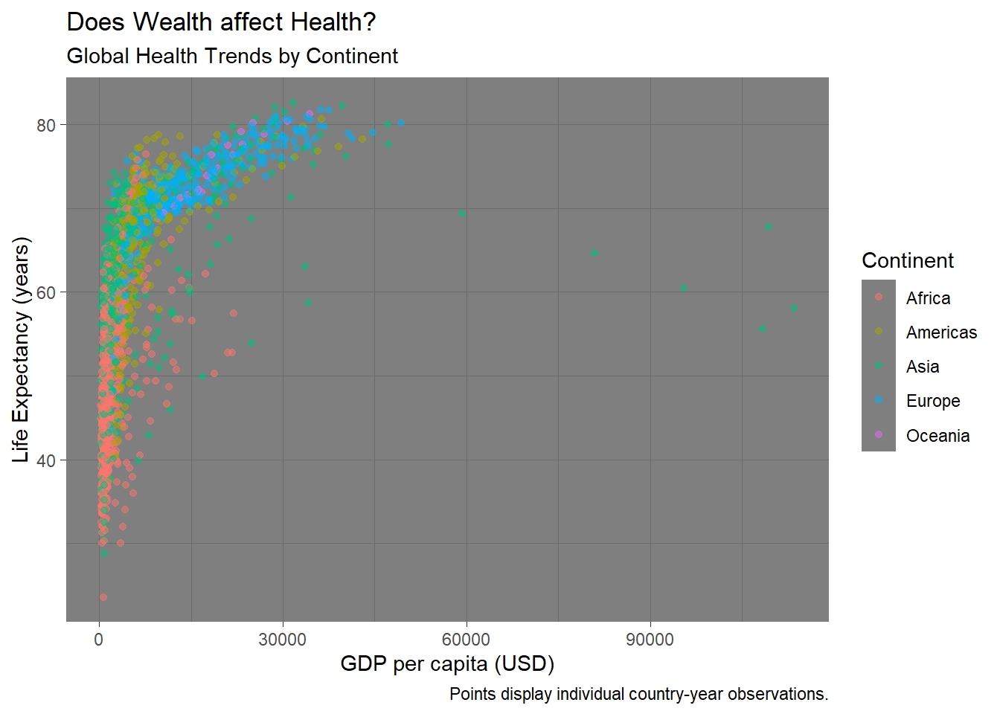
# Version theme_classic
myviz +
# How about this theme?
theme_classic()
Answer
theme_bw() makes a nice black-and-white graph; theme_dark() makes a funky graph with a dark grey background; theme_classic() makes a very simple graph, with fewer distractions.
I personally really like the default theme or theme_bw(). Sometimes theme_classic() can be really helpful if you have a particularly busy visual.
Visualizing diamonds data
Next, let’s use the diamonds dataset, which comes with the ggplot2 package
This is a dataset of over 50,000 diamond sales.
# Check out first 3 rows...
diamonds %>% head(3)## # A tibble: 3 × 10
## carat cut color clarity depth table price x y z
## <dbl> <ord> <ord> <ord> <dbl> <dbl> <int> <dbl> <dbl> <dbl>
## 1 0.23 Ideal E SI2 61.5 55 326 3.95 3.98 2.43
## 2 0.21 Premium E SI1 59.8 61 326 3.89 3.84 2.31
## 3 0.23 Good E VS1 56.9 65 327 4.05 4.07 2.31We can use this visualization to check whether the cut of diamonds really has any relationship with price.
glimpse(diamonds)## Rows: 53,940
## Columns: 10
## $ carat <dbl> 0.23, 0.21, 0.23, 0.29, 0.31, 0.24, 0.24, 0.26, 0.…
## $ cut <ord> Ideal, Premium, Good, Premium, Good, Very Good, Ve…
## $ color <ord> E, E, E, I, J, J, I, H, E, H, J, J, F, J, E, E, I,…
## $ clarity <ord> SI2, SI1, VS1, VS2, SI2, VVS2, VVS1, SI1, VS2, VS1…
## $ depth <dbl> 61.5, 59.8, 56.9, 62.4, 63.3, 62.8, 62.3, 61.9, 65…
## $ table <dbl> 55, 61, 65, 58, 58, 57, 57, 55, 61, 61, 55, 56, 61…
## $ price <int> 326, 326, 327, 334, 335, 336, 336, 337, 337, 338, …
## $ x <dbl> 3.95, 3.89, 4.05, 4.20, 4.34, 3.94, 3.95, 4.07, 3.…
## $ y <dbl> 3.98, 3.84, 4.07, 4.23, 4.35, 3.96, 3.98, 4.11, 3.…
## $ z <dbl> 2.43, 2.31, 2.31, 2.63, 2.75, 2.48, 2.47, 2.53, 2.…Looks like cut is an ordinal variable (fair, good, ideal, etc.), while price is numeric (eg. dollars).
A boxplot might be helpful!
ggplot(data = diamonds, mapping = aes(x = cut, y = price, group = cut)) +
# notice how we added group = cut, to tell it to use 5 different boxes, one per cut?
geom_boxplot()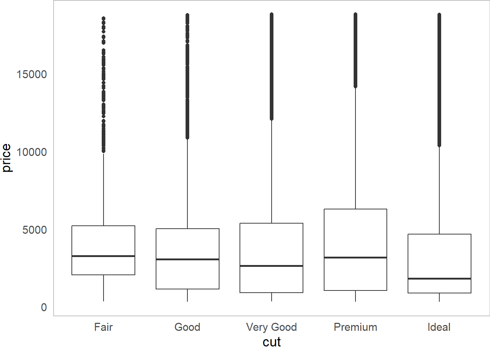
Huh. How odd. Looks like the cut of diamonds has very little impact on what price they are sold at!
We can see lots of outliers at the top - really expensive diamonds for that cut.
LC 6
Question
Let’s make this visualization more visually appealing.
What changed in the code to make these two different visual effects? Why? (Hint: fill.)
ggplot(data = diamonds, mapping = aes(x = cut, y = price, group = cut)) +
geom_boxplot(fill = "steelblue")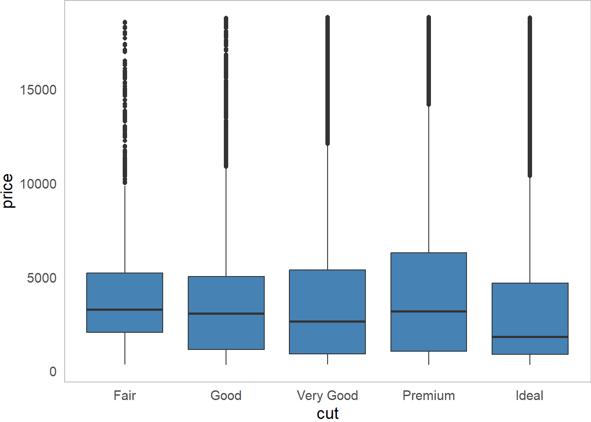
ggplot(data = diamonds, mapping = aes(x = cut, y = price, group = cut, fill = cut)) +
geom_boxplot()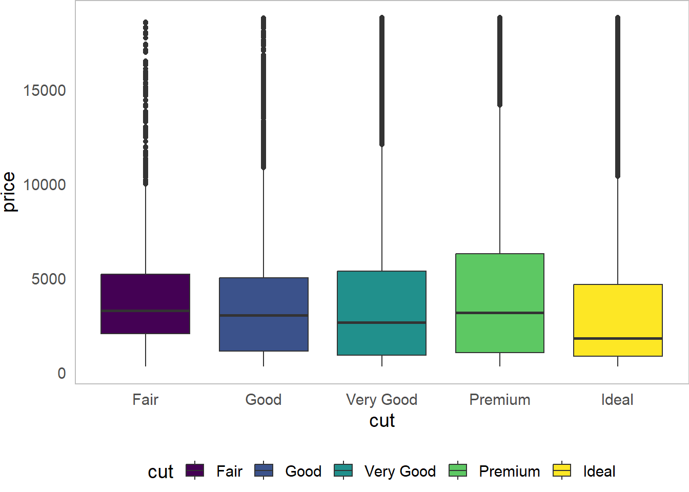
LC 7
LC 8
Question
Sometimes, the legend doesn’t fit well. We can try this:
What happens when you change legend.position from "right" to "bottom" to "left" to "top"?
ggplot(data = diamonds, mapping = aes(x = cut, y = price,
group = cut, fill = cut)) +
geom_boxplot() + coord_flip() +
theme(legend.position = "bottom")
ggplot(data = diamonds, mapping = aes(x = cut, y = price,
group = cut, fill = cut)) +
geom_boxplot() + coord_flip() +
theme(legend.position = "right")
ggplot(data = diamonds, mapping = aes(x = cut, y = price,
group = cut, fill = cut)) +
geom_boxplot() + coord_flip() +
theme(legend.position = "left")
ggplot(data = diamonds, mapping = aes(x = cut, y = price,
group = cut, fill = cut)) +
geom_boxplot() + coord_flip() +
theme(legend.position = "top")Visualizing Distributions
Different geom_ functions use colors in different ways, but this is a good example.
For example, below is a histogram. It visualizes the approximate distribution of a set of values.
We can see how frequently diamonds are sold for certain prices versus others.
ggplot(data = diamonds, mapping = aes(x = price, group = cut, fill = cut)) +
geom_histogram(color = "white") + # notice new function here
labs(x = "Price (USD)",
y = "Frequency of Price (Count)",
title = "US Diamond Sales")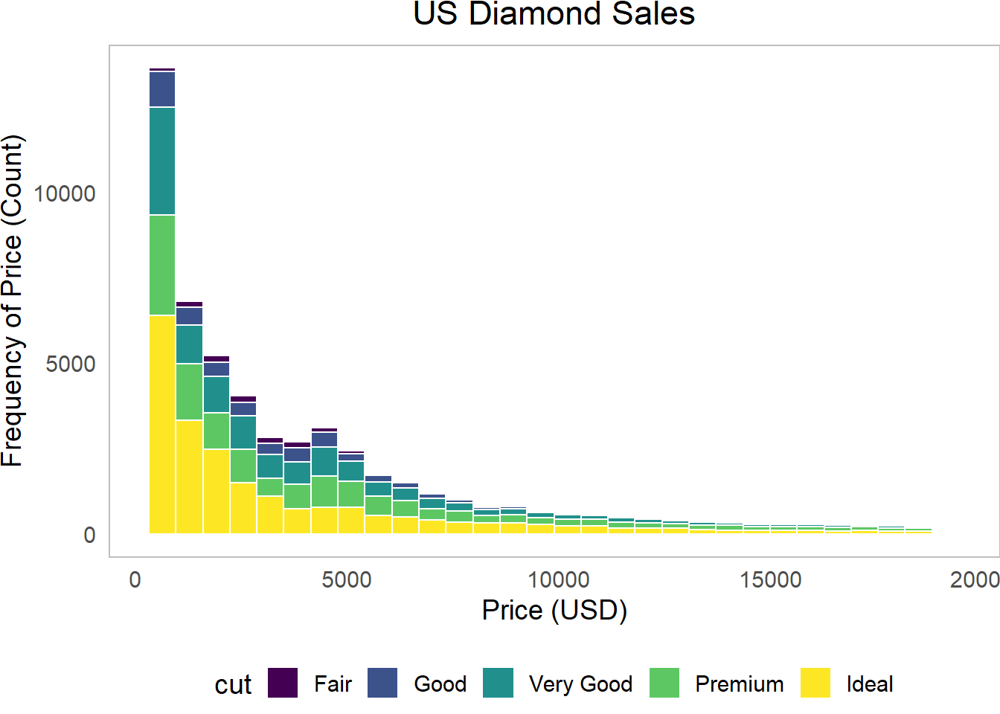
LC 9
Breaking Up a Visual
Finally, we might want to break up our visual into multiple parts. We can use facet_wrap to do this, but how exactly does it work? Let’s test it out.
LC 10
Question
What changed in the code below, and what did it result in?
ggplot(data = diamonds, mapping = aes(x = price, fill = cut)) +
geom_histogram(color = "white") +
facet_wrap(~cut) + # must be categorical variable
labs(x = "Price (USD)",
y = "Frequency of Price (Count)",
title = "US Diamond Sales")
Answer
This visual split up our histograms into separate panels (making it much more readable), and easier to compare distributions. We write facet_wrap(~ before the variable name (eg. cut) to specify that we want to split up the data by the values of cut. This sorts our rows of data into 5 different piles (since there are 5 different categories in cut) and makes a panel out of each.
You made it! You have now tried out a series of visuals in ggplot. We will use ggplot a lot in this course, so please be sure to reach out when you have questions, talk with others in your group, and work together to build great visualization skills! (Plus, it’s super applicable professionally!)